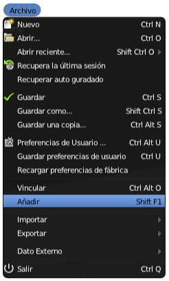
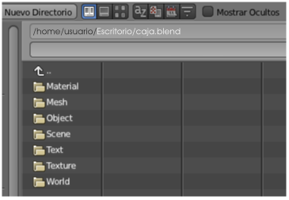
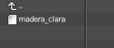

Importar texturas
Entra dentro de lo normal que tengamos un material (con o sin texturas añadidas) y que queramos usarlo para nuestro modelado. En Blender no se puede recurrir al recurso de Copiar/Pegar entre dos documentos que se encuentren abiertos.
Si el material/textura que deseemos añadir esta en otro .blend, esto es lo que debemos hacer:
- Usar el menú Archivo/Añadir.

- Esto hace que se despliegue el explorador de archivos. Nos dirigimos al .blend que contiene el material que queremos traer. Cuando estemos en él, esto es lo que se nos mostrará. Es toda la información del .blend.

- Queremos obtener algo que se encuentra dentro de Material, así que accedemos. En este caso en concreto sólo hay uno pero podría haber muchos, así que una buena organización en los nombres será de mucha ayuda.

- Seleccionamos el material o materiales que nos interesen (nosotros escogemos madera_clara) y arriba a la derecha pulsamos Link/Append from library.
Ahora en Materiales  , en el desplegable que los contiene, nos encontraremos con él para usarlo.
, en el desplegable que los contiene, nos encontraremos con él para usarlo.
Repositorios de materiales
En internet hay sitios dedicados a recoger los mejores materiales/texturas que se van creando. De esta manera ahorramos una buena dosis de tiempo si encontramos allí un material ya diseñado o uno que queramos usar de base para modificarlo y crear otro nuevo.
Estos son algunos de los sitios más interesantes para conseguir materiales/texturas:
- Blender Materials (viejo repositorio): http://matrep.parastudios.de
- Blender Materials (nuevo repositorio): www.blender-materials.org
- Blender Mats: http://www.freewebs.com/blendermats